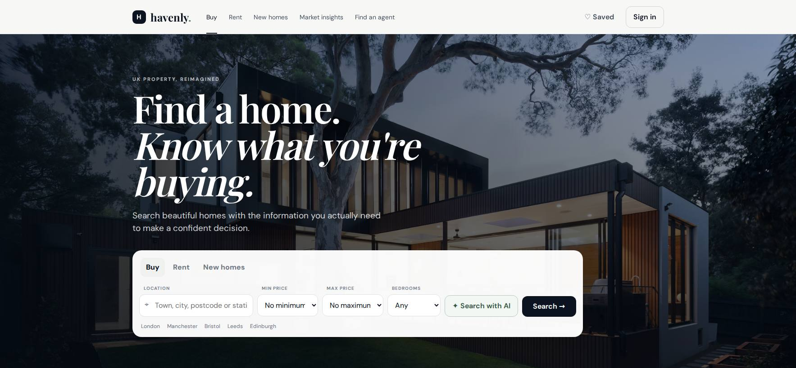

01 · PROPERTY / DIGITAL PRODUCT
Property Adviser — a clearer way to discover property.
A portfolio project focused on property discovery, presentation and a confident path from browsing to enquiry.

THE BRIEF
Make property information easier to understand.
The experience is structured around the questions a property customer has first: what is available, where it is, what it looks like and what to do next.
We used a clean information hierarchy, strong property presentation and clear enquiry paths to keep the interface useful rather than overloaded.
WHAT WE BUILT- Property discovery interface
- Responsive page system
- Clear enquiry journeys
- Visual property presentation
- Prioritised property information before decorative content
- Kept enquiry actions visible throughout the experience
- Designed the layout to work across desktop and mobile
HTML / CSSJavaScriptResponsive UX
Portfolio project. No performance or commercial results are claimed here because this page documents the build rather than verified client metrics.
RESULT / EVIDENCE
A completed responsive build.
The verifiable outcome presented here is the delivered portfolio build: a responsive property discovery interface with structured information and clear enquiry paths.
Commercial performance, rankings and lead volume are not claimed because no verified production analytics are attached to this portfolio project.